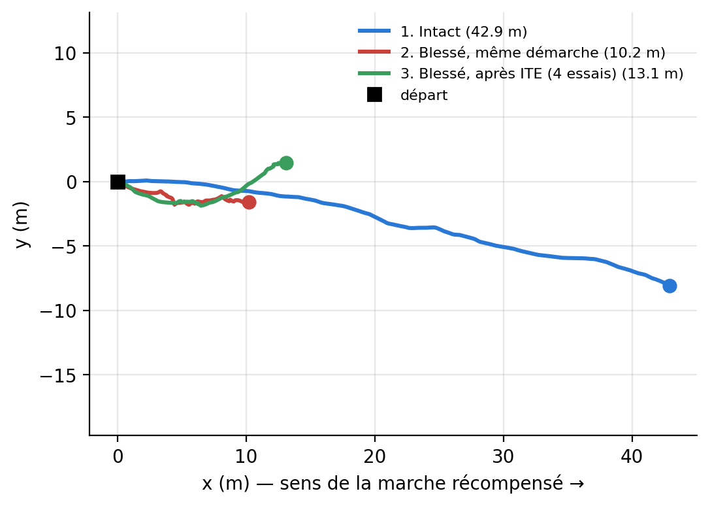
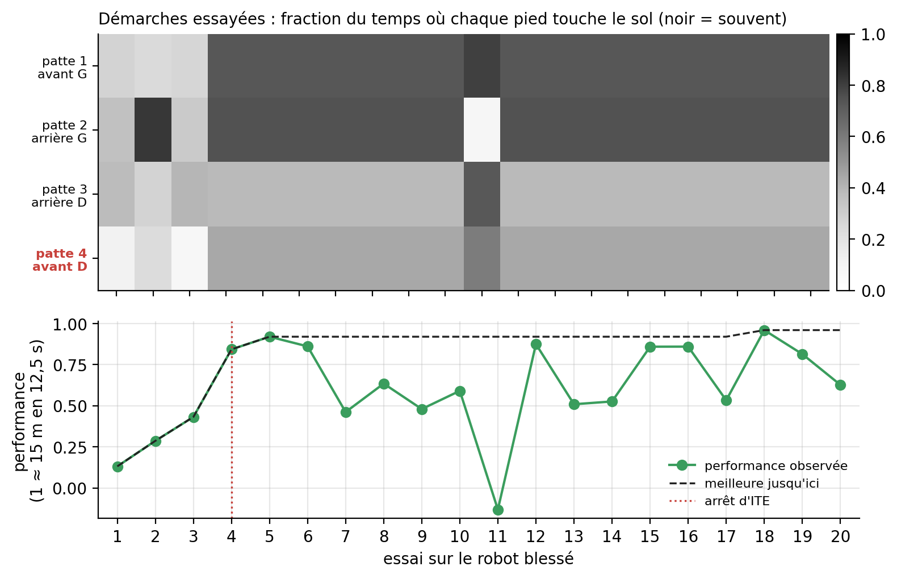
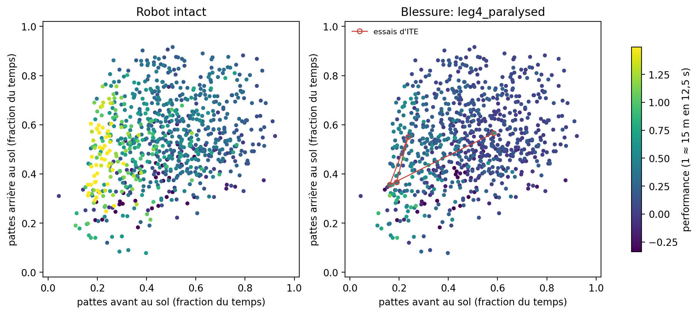
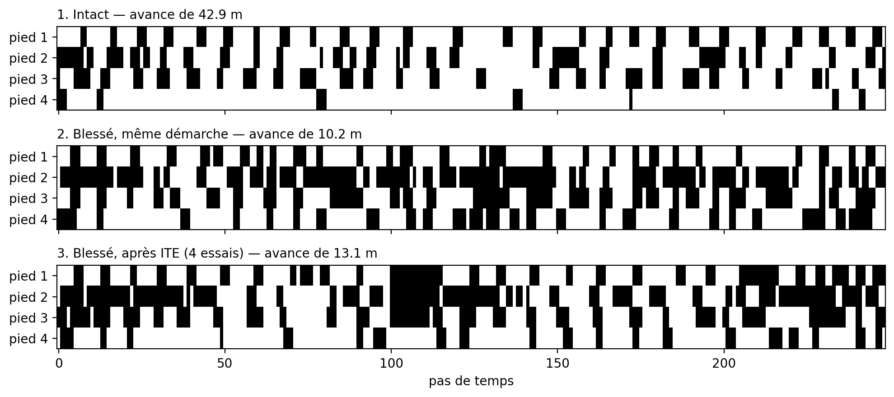

Adaptation à la blessure « leg4_paralysed » avec ITE
Répertoire pgame (seed 0). 1 : la meilleure démarche du robot intact. 2 : la même démarche sur le robot blessé. 3 : la démarche trouvée par ITE, en 4 essais sur le robot blessé.

Chaque vidéo montre l'épisode MÉDIAN sur 8 (départs aléatoires différents), ni le meilleur ni le pire. Distance moyenne vers l'avant en 12,5 s (± écart-type sur les 8) : intact 43.0 ± 2.0 m ; blessé, même démarche 10.3 ± 1.4 m ; après ITE 12.1 ± 3.0 m.
Gros plans
Ce qu'ITE essaie



En 3D (souris : tourner, molette : zoomer)
Code 00c74610e9b938eca53b27bbdc212cd2c1300746-dirty · régénérer : python -m qd_damage.viz_ite --run results/repertoires/pgame_seed0 --scenario leg4_paralysed --out media/final/ite_pgame --rep 1